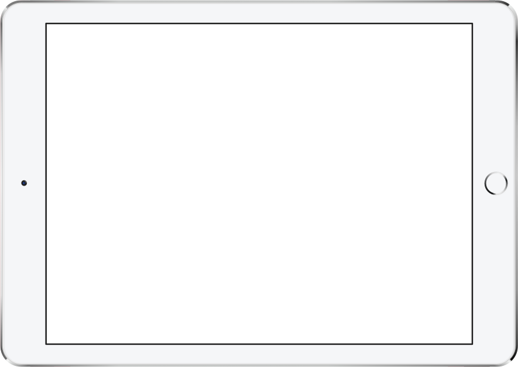

I'M STILL WORKING THE MOBILE VERSION
🤘
back

I have always been bothered by the lack of forgivness present when scrubbing a video on a touch screen device. Once you have started scrubbing there is no way you can have that video continue playing smoothly if you were to change your mind.
As a solution to this, I redesigned the common scrub interaction to include the ability to cancel or hold your decision. The interface gives a visual preview of the video as the user scrubs to help them make a more accurate decision.